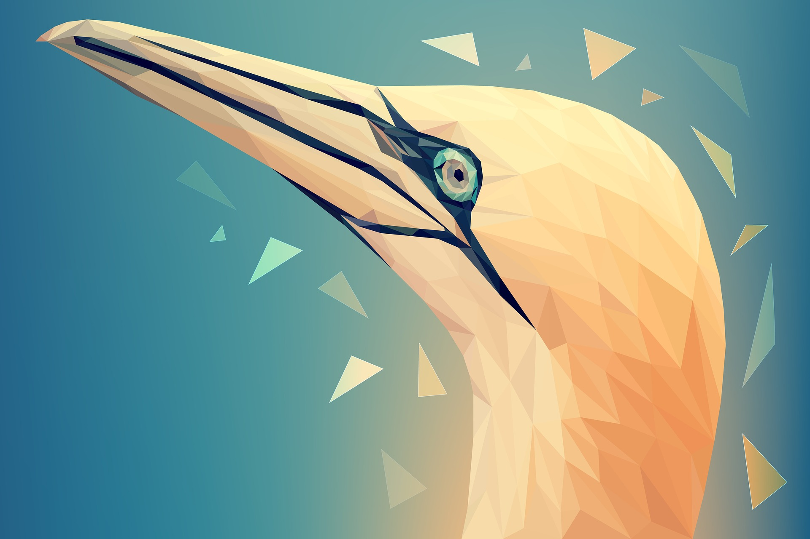
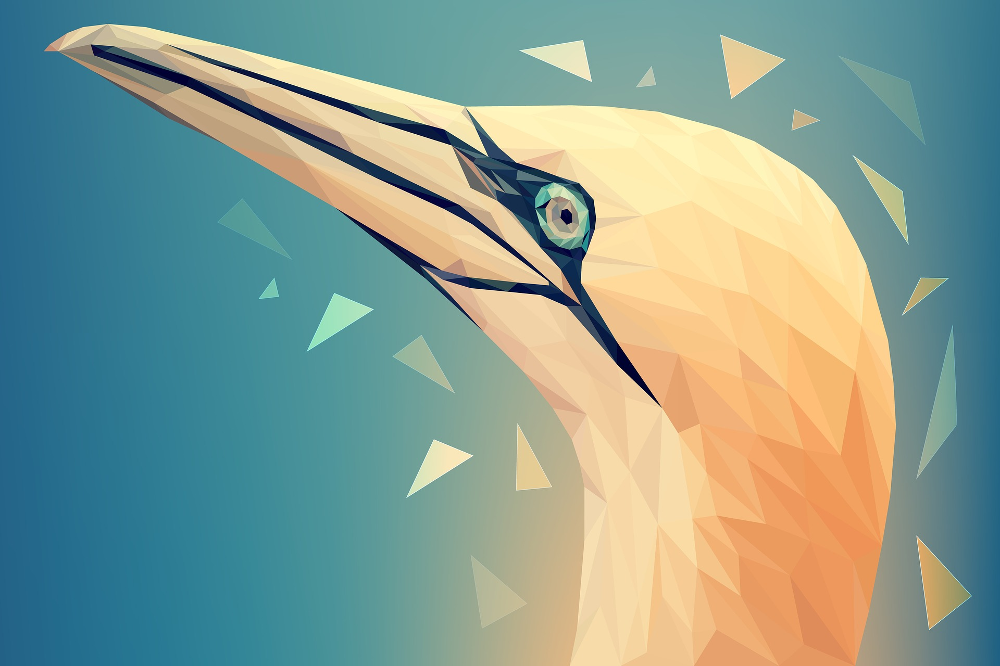

navegue e entenda sobre a importância deste tema - #ProtectAnimals.
A grandeza de uma nação pode ser julgada
pelo modo que seus animais são tratados.
created by Rafael Ciebra - BandTec Digital School
created by Rafael Ciebra - BandTec Digital School

O que está errado?
Estamos consumindo os recursos naturais da Terra mais rápido do que eles podem ser renovados.
Destruímos os hábitats dos animais, seus alimentos, água e ar — bem como os próprios animais — a um índice insustentável.
À medida que mais ninhos de pássaros são destruídos para a construção de arranha-céus, rios são drenados para a construção de estacionamentos
e elefantes são abatidos para a fabricação de adornos, o número e a diversidade dos animais encolhem.
O tráfico aumenta a ameaça à vida selvagem. O comércio ilícito de animais e de partes de seu corpo no mercado negro está crescendo.
O aumento da demanda por produtos provenientes de elefantes, rinocerontes e trigres, bem como de outros animais terrestres icônicos, ameaça não apenas
essas espécies, mas a paz, a saúde e a prosperidade das pessoas que vivem próximas deles.
O tráfico de vida selvagem reduz a segurança dos cidadãos e os lucros de negócios legítimos.
Por que devemos nos importar?
Quando uma espécie de animal é extinta, os animais insubstituíveis são apenas parte da perda.
Embora possamos considerar o mundo animal separado do nosso mundo, nossas vidas e as deles estão interligadas, conectadas por milhões de fios.
Plantas, animais, pessoas e o meio ambiente juntos constituem uma comunidade biológica — um ecossistema — no qual cada parte
depende do outro para sobreviver. Quando uma parte da comunidade entra em desequilíbrio ou é eliminada, o sistema todo sofre.
Todos podem ajudar
Embora os seres humanos sejam a maior ameaça à vida selvagem, também somos sua única esperança.
Em todo o mundo pessoas físicas e pequenos grupos, bem como grandes organizações, empresas e governos, estão fazendo sua parte para garantir um
futuro mais seguro para a nossa vida selvagem — e para nós. Desde conter a demanda por produtos derivados de animais, criar e aplicar leis contra o
tráfico ilegal e ser voluntário em organizações conservacionistas que ajudam a proteger espécies em perigo de extinção, os heróis da conservação combatem
as ameaças enfrentadas pelos animais do planeta.
Nenhuma ação de conservação é pequena demais. Talvez não sejamos capazes de recuperar espécies que já foram perdidas, mas muitas
outras em vias de extinção precisam de nossa atenção e ação imediatas. Não seja parte do problema. Seja a solução: respeite e proteja a vida selvagem
da Terra.


 



Olá! meu nome é Rafael e tenho 18 anos, você provavelmente deve estar se perguntando por que eu escolhi este tema?
Bom, sempre fui apaixonado pelos animais, faço parte do grupo de pessoas que escolheu
ama-los e respeita-los, acredito que todas as pessoas tem uma missão na vida. Todos os protetores de animais
são pessoas que protegem qualquer espècie de animal do sofrimento e abandono sejam eles bixos ou humanos.
tenho como um dos meus objetivos de vida fazer parte de projetos contra a violência e exploração aos animais.
Tenho atualmente dois cachorros que amo muito (Johny e Ozzy ) eles me dão amor e carinho que poucos humanos dão.
Atualmente sou estudante de Análise e desenvolvimento de sistemas, o desenvolvimento deste site individual foi um verdadeiro desafio, porém muito prazerozo de desenvolver pois juntou duas paixões minhas,
Desenvolver e Abordar o tema pro vida animal :)